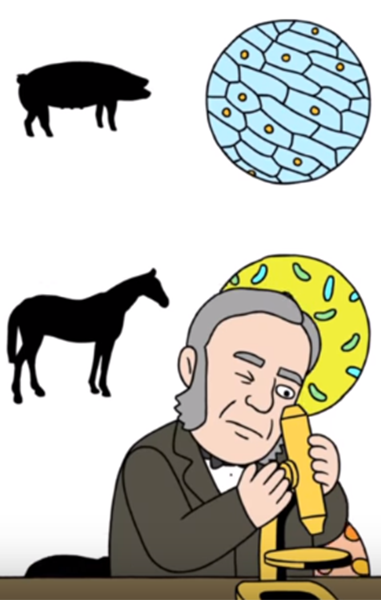

La teoría celular es una parte fundamental de la biología que explica la formación de los seres vivos a partir de las células como sus constituyentes básicos.
En este curso se describirán los avances tecnológicos que condujeron al descubrimiento de las células, y cómo es que a partir del estudio de sus características fue conformándose la teoría celular tal como la conocemos.
Los conceptos que aquí se abordan son un punto de partida indispensable para comprender procesos más complejos que ocurren dentro de las células.
